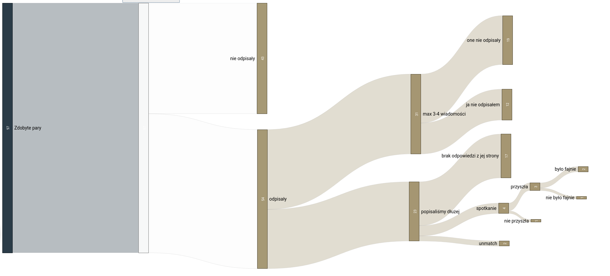

2020-11-12
Miesiąc na tinderze w liczbach i statystykach - Tinder i Polska
Małe podsumowanie mojego miesiąca spędzonego na Tinderze pół roku temu, jakieś liczby, statystyki i wnioski.
Założenia
- utrzymuje pewien standard odnośnie kobiet, które lajkuje
- kupuję golda i wybieram spośród tylko tych, które mnie polajkują
- piszę maksymalnie tydzień do dwóch po czym albo spotkanie, albo koniec, przy czym nie inwestuje za dużo czasu i próbuję w miare szybko przejść do spotkania
Odnośnie 1. - możemy się łudzić ile chcemy, ale jasne jest, że wygląd ważna rzecz. Mógłbym swipować w prawo wszystko, ale wiem, że jeśli kobieta nie pociąga mnie chociaż minimalnie, to nic z tego nie będzie. No offence, po prostu moja preferencja - mam swój gust i wiem co lubię.
Odnośnie 2. - z tego co się orientuje dość trudno uzyskać parę jeśli jesteś mężczyzną. To znaczy na np. 10 twoich lajków przypada 1 od kobiety, co jest bardzo optymistycznym wariantem. Widziałem gdzieniegdzie statystyki, które wyglądały znacznie gorzej typu 1 na 100 itd. W każdym razie - nie mam dużo czasu codziennie + godzina mojej pracy jest trochę warta, zatem po prostu wolę oszczędzić sobie czasu, zoptymalizować i wybierać z tych osób, co mnie polajkowały, zamiast marnować dzień na swipowanie na ślepo. Mniejszy wysiłek z mojej strony a czasem jestem leniwym nierobem.
Odnośnie 3. - raczej nie ma sensu z kimś pisać przez miesiąc, dopiero zaproponować spotkanie i zostać odrzuconym.
Selekcja
Na +/- 25 lajków jakie otrzymywałem od kobiet, przynajmniej połowa odpadała.
Czynniki nieatrakcyjne w moim odbiorze to przede wszystkim:
- otyłość/duża nadwaga
- wzrost powyżej 175 cm ( mi tak nie do końca przeszkadza, ale kobietom tak, więc nie ma co iść na spotkanie i marnować jej czas)
- ubiór typu emo/skate/niechlujstwo/nihilizm/abnegactwo - nie moje klimaty
- jakieś czerwone flagi w opisie typu info o lubowaniu się w ćpaniu/fwb/promiskuityźmie - to mnie nie interesowało, bardziej materiał pod #zwiazki
Czyli generalnie szara myszka dla anonka raczej, byle w normalnej wadze i z mózgiem przynajmniej. I nie, kobieta nie kończy się na 60 kg. Po prostu ma to wyglądać spoko i tyle. Do tego warto dodać, że raczej wolę brunetki aniżeli blondynki, więc za ciemne włosy, wyraziste brwi/urodę śródziemnomorską był zawsze duży plus, a co do blondynek/rudych - po prostu neutralnie, nie dyskwalifikowałem nikogo z tego względu. Zdarzało się też czasami, że lajkowałem za sam opis praktycznie jak mi czymś bardzo zaimponował.
Opis górskiego
Teraz tak - trochę o mnie: Lat rocznikowo 21, tyle też widniało na tinderze. Pracuję sobie jako programista od kilku lat, zarabiam całkiem fajnie, powyżej dyszki miesięcznie. Na tinderze widniało stanowisko pracy w postaci Product Engineera.
Mam dość sporo zainteresowań, żyje raczej aktywnie. Koncerty, siłka, sporty, lubię malarstwo, czasem gdzieś pojadę w podróż, nieźle gotuje, uwielbiam sprzątać, czytać literaturę faktu i ogółem tworzyć - pisać/spawać/majsterkować. Do tego jestem fanem minimalizmu i ekologii. Lubię też adrenaline czyli jakiś skok na bungee, ze spadochronem, wysokości itd. Na dupie raczej nie siedzę. Wydaje mi się, że jestem wygadany i nie mam problemu z porozumiewaniem się z innymi ludźmi. Nie jestem też raczej nieśmiały. Przed tym byłem już w kilku relacjach zatem nie były to moje jakieś pierwsze kontakty z kobietami. Jak na swój wiek radzę sobie raczej zajebiście, jak bardzo nieskromnie by to nie brzmiało. Nie chcę być tu arogancki, po prostu opisuję wam fakty, zdaje sprawozdanie.
Jeśli chodzi o aspekty wizualne: manlet ~178 cm wzrostu. Ale w sumie mam to w piździe, spotykałem się z kobietami podobnego wzrostu i w zasadzie lubię tak okolice ~170, 175 mi nie przeszkadza, jak jest wyższa to gorzej, bo niewygodnie całować czasem, ale od biedy też może być - zależy od osoby, jednak z wyższą od siebie kobietą się nie spotykałem.
Teraz tak - w skali piwniczaka/chada jaka to często krąży na wykopie: na plus zdecydowanie fajna broda, gęste włosy, wyraźne i proste brwi. Na minus zakola, ale jak dobrze zaczesane to nie widać - nie są ogromne. Oczy ciemne, uroda też. W klubach czasami mylą mnie z włochem/hiszpanem. W sumie jak byłem we Włoszech to to samo było.
Sylwetka okej - nie jestem jakiś mocno zalany, mam troszkę mięśni pod spodem, w końcu kiedyś sporo trójboju wlatywało. Tutaj moja twarz - tych zdjęć też używałem na tinderze między innymi.
{kind=link}
Trochę liczb
I teraz tak - po równym miesiącu miałem 97 par, czyli lajków około 200. Na 97 par, zawsze pisałem pierwszy. Ani razu to kobieta nie napisała pierwsza.
43 w ogóle nie odpisały.
54 odpisały. Z 54 aż 31 odpadło po 3-4 wiadomościach, gdzie w 19 przypadkach to one nie odpisały, w 12 to ja nie odpisałem.
W pozostałych 23 przypadkach popisaliśmy dłużej. Z tego 17 dziewczyn w którymś momencie przestało odpisywać, tak po prostu. 2 razy poleciały unmatche - raz trafiła się trochę niezbyt normalna agentka, która wyjechała ze ślubem i takimi tematami, drugi przypadek było to dziewcze przepiękne, idealnie w moje gusta, ale tak po prostu głupia, że plecy bolały mnie od niesienia tej rozmowy.
Do tego 4 umówienia na spotkania. 1 nie przyszła - dnia kiedy mieliśmy się spotkać przestała odpisywać, kontakt się urwał.
3 przyszły. W 2 przypadkach było fajnie w 1 nie było fajnie.
To wszystko ilustruje grafika poniżej.

TLDR
z ~200 lajków, 97 par, w 74 z nich albo nie odpisało albo wymieniliśmy max kilka wiadomości, z 23 popisałem dłużej, z 4 się umówiłem, z 3 wyszedłem, 1 nie przyszła na spotkanie. TLDR of TLDR: 97 par -> 3 spotkania.
Konwersja ~3%, trochę jak w biznesie. W każdym razie wyniosłem z tego wszystkiego znajomość z dwoma fajnymi dziewczynami, cóż tam dalej będzie to nie wiem, plus jedna fajna koleżanka, z którą piszę tak po prostu - bez planów na nic więcej.
Wnioski
Jakieś tam moje obserwacje:
z dużą częścią dziewczyn rozmowa była trudna - trzeba było ponieść konwersacje dopóki nie wyczułeś jakiegoś punktu zaczepienia w rozmowie - czegoś co lubią, co otworzy im buzię, wtedy już leciało
jakiś tam procent na początku potrafił być oschły/niemiły wręcz. Zazwyczaj po natychmiastowej reakcji w postaci jakiejś riposty albo równie niemiłej odpowiedzi, zaczynały zachowywać się normalnie, to chyba taka próba srania na głowę i tego czy to tolerujesz #logikarozowychpaskow
opis praktycznie nie ma znaczenia - wystarczy nie napisać tam czegoś mocno przyjebanego tak naprawdę, eksperymentowałem z różnymi i co najwyżej to widziałem lekką zmianę w tym jakie kobiety mnie lajkują a nie w tym ile ich jest.
Wydaje mi się, że jestem kapkę powyżej średniej jeśli idzie o wygląd, kilka razy słyszałem, że jestem przystojny od nieznajomych kobiet i nie były to koleżanki babci, a po miesiącu z około 100 par, wyszły 3 spotkania, z czego dwa sensowne a jedna z tych dwóch mi się dość spodobała póki co.
Wydaje mi się, że niektóre osoby hejtujące tego typu appki mają część racji, sprawa jest prosta - wygląd. Pewien trend tu widać.
Czy to źle, czy dobrze? Nie wiem, niechaj sobie każdy sam oceni, ja prezentuje tutaj tylko fakty i suche liczby.
Ogółem się cieszę, że to zrobiłem, naprawdę poznałem fajne osoby. Plus nie winię tu kobiet ani nikogo nie oceniam, czy ktoś robi źle, dobrze i tak dalej, nie uważam, że są jakieś okropne, po prostu opisuję liczby - don't shoot the messanger.
Dla mnie wniosek jest taki - na żywo idzie mi znacznie lepiej. W klubie/barze/na ulicy o wiele łatwiej mi poznać jakąś kobietę i umówić się z nią. Na żywo dochodzi gestykulacja, mowa ciała, twarzy, spojrzenie. Zatem dla mnie Tinder być może nie jest idealnym rozwiązaniem.
Szczerze, moim zdaniem, jeśli ktoś jest mega nieśmiały i nie wygląda jakoś bardzo super, to Tinder raczej nie będzie zbyt przyjemnym doświadczeniem.
Za rok ponowię eksperyment (o ile nie wyjdzie jakiś związek), wszystko będzie takie samo, z tą różnicą, że dodam jedno zdjęcie bez koszulki, na którym będzie jakiś fajny sześciopak (jak już go znowu zrobię xD!) + np. zdjęcie z motocyklem.
To tyle ludziska, reportaż zakończony. Oceńcie sobie wszystko sami.